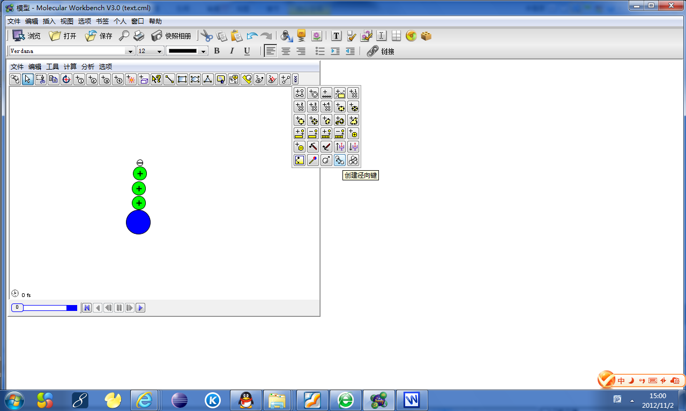

生物模型制作
第一步：
新建--->命名--->完成--->保存（选择你保存的目录）

第二步：
右键--->仿真计算模型--->二维分子模拟器

第三步：
设置二维模拟器的属性，设置一个自己认为合适的大小，我设置的是 58 - 40 。
点击工具--->在工具条上显示所有按钮

第四步：
加入 一个WS粒子，
加入 三个PL粒子
一个NT粒子
然后设置ws粒子的属性，点击WS粒子右键---->属性；
点击 改变，然后将数值 改成 4.5 和0.1；
改变PL粒子属性，同上；
将数值改成(2.5，0.01)
改变NT粒子属性，同上；
将数值改成（1，0.01）
；
第五步:
给NT粒子加入电荷，点击NT粒子，右键，加入电荷，数值为（-1）；
给PL 粒子加入电荷 操作同上，数值为（0.2）；
三个粒子 都加入同样的电荷。
第六步:
调整图形，让粒子成一条直线； 加入径项键：

 将相邻的粒子相连，将WS粒子与NT粒子相连；
将相邻的粒子相连，将WS粒子与NT粒子相连；
第七步:
创建一个矩形区域，
设置矩形区域的状态，点击右键，物理，电力场；
选择 施加，方向 向南，然后关闭；
点击运行
将力度条 控制到 分子稳定的大小。稳定后，暂停，运行的目的是为了实验 是否能正常表示。
 分子会一直在 举行框中游动。
然后 复制 分子，Ctrl+C，粘贴Ctrl+V，复制 10 左右，大概能将矩形框放满。
调整位置将分子都放入矩形框中。
点击运行，调整动能条，使分子能在矩形框中稳定的 运动。
分子会一直在 举行框中游动。
然后 复制 分子，Ctrl+C，粘贴Ctrl+V，复制 10 左右，大概能将矩形框放满。
调整位置将分子都放入矩形框中。
点击运行，调整动能条，使分子能在矩形框中稳定的 运动。
第八步：
加入按钮： 点击右键---->模型标准控件---->按钮控件；
点击模型，右键---->取消模拟器控制条；
第九步：
加入俩个矩形框，点击矩形框，右键，属性，选择颜色。
一个选择 黄色，一个选择蓝色。
第十步：
点击编辑--->插入图像文件；
找到图像文件
复制10图像，将图像与每一个分子重合，点击图像，右键--->点绑定
然后 点击 黄色 矩形， 右键---->次序----->选择 放在分子层前。
选择蓝色矩形，同上，放在分子层前，
第十一步：
点击工具--->取消工具条；
点击边框，右键--->显示菜单条；
完成------->保存。